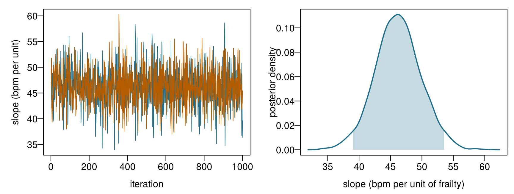
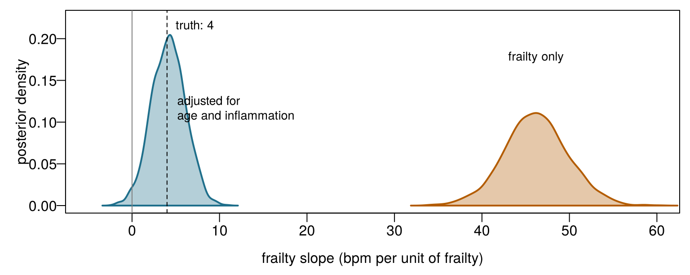

icu8 = FileAttachment("data/icu_aki.csv").csv({typed: true})
akiD = icu8.filter(d => d.site === "ICU_D").map(d => d.delta_creatinine_48h >= 0.3 ? 1 : 0)
viewof m0 = Inputs.range([0.05, 0.95], {value: 0.5, step: 0.01, label: "Prior mean"})
viewof s0 = Inputs.range([2, 300], {value: 2, step: 1, label: "Prior strength (imaginary patients)"})
viewof nD = Inputs.range([0, 313], {value: 10, step: 1, label: "ICU_D patients observed, n"})8 Bayesian learning and predictive uncertainty
A newly opened ICU has admitted its first 10 patients; 2 developed AKI. Before the unit opened, Emma believed its AKI rate would be about 60 %, and she was as confident as if she had already seen 10 patients, 6 of them with AKI. Treat her belief as 10 imaginary patients, add the 10 real ones, and work out what she should believe now. Decimals are allowed.
| Question | Your answer |
|---|---|
| Patients with AKI, imaginary plus real | |
| Patients in total, imaginary plus real | |
| Emma's updated estimate of the AKI rate (a proportion) | |
| Had her belief been worth 100 imaginary patients (60 with AKI), the updated estimate would be… |
How to use this chapter
Starting here?
This chapter borrows a few ideas from earlier chapters. In one line each:
- Models and decisions. A model (Definition 1.3) turns data into information; a decision
- combines that information with values. With the scores used in Chapter 1, the kidney-protective bundle is the better choice whenever the probability of AKI is above the threshold \(t = 0.25\) (Section 1.5).
- Probability, likelihood and Bayes’ theorem (Chapter 2). The likelihood \(L(\theta)\) measures how well each value of a parameter \(\theta\) explains the data; Bayes’ theorem turns a prior into a posterior: posterior ∝ likelihood × prior. The threshold for acting is \(t = C_{\text{FP}}/(C_{\text{FP}} + C_{\text{FN}})\), set by the losses of the two kinds of error.
- Training and test sets (Chapter 3). Models are judged on patients they have not seen; Ward 7 uses the book’s shared split (1 000 training and 250 test patients). The root mean squared error (RMSE) and mean absolute error (MAE) measure numerical errors.
- Linear and logistic regression (Chapter 4, Chapter 5). A linear model predicts \(\beta_0 + \beta_1 x_1 + \dots\); a logistic model passes the same sum through the S-shaped logistic function to give a probability. Chapter 4 also met confidence intervals and prediction intervals.
- Trees and forests (Chapter 6). Random forests and boosting add up many trees; they predict well but give a single number with no statement of uncertainty.
| Example | Who or what | Outcome | Faces you will meet |
|---|---|---|---|
| 1 Ward 7 ICU | 1 250 ICU patients in 4 hospitals | change in creatinine over 48 h (acute kidney injury if ≥ 0.3 mg/dL) | Aoife (71, sepsis, borderline risk), Tomás (54, low risk), Priya (38, high risk); Dr Emma Walsh; Seán, the pharmacist |
| 2 ONCO-1 trial | 1 000 patients randomised to chemotherapy or not | tumour shrinkage (%) | patients #0042 and #0917 |
| 3 HomeBeat | 500 people wearing a smartwatch at home | stress score, deterioration event | Lena |
| 4 CellWorks | 420 production batches of a cell therapy | potency score | batch CW-118 |
All four datasets are simulated and can be downloaded from the data appendix. The full introduction is in Section 1.1.
This chapter teaches models to report their uncertainty. It has nine sections and a Lab, six quick checks, three “Try it” widgets, a challenge and three coding missions in R and Python. Allow about two hours. The heavier models (Stan’s samplers and BART) were run once, outside the browser, and their draws are loaded here; in the browser you use exact formulas and grids, which give the same answers for the simpler models.
Notation at a glance (for lookup only)
| Symbol | Meaning | Section |
|---|---|---|
| \(\theta\) | a parameter (here an AKI rate, a mean or a coefficient) | Section 8.1 |
| \(p(\theta)\), \(p(\theta \mid \mathbf{y})\) | prior and posterior distribution of \(\theta\) | Section 8.1 |
| \(\text{Beta}(a, b)\) | beta distribution; \(a\) and \(b\) act as prior counts of “yes” and “no” | Section 8.2 |
| \(\beta_0, \beta_1, \sigma\) | intercept, slope and residual standard deviation of a regression | Section 8.3 |
| \(\theta^{(s)}\), \(S\) | the \(s\)-th of \(S\) posterior draws | Section 8.4 |
| \(\widehat{R}\), ESS | R-hat and effective sample size, two MCMC diagnostics | Section 8.4 |
| \(\tilde y\) | a future outcome of a new patient | Section 8.6 |
| \(m\) | number of trees in BART | Section 8.8 |
The full list is on the notation page.
8.1 From Bayes’ theorem to Bayesian learning
In Chapter 2, Bayes’ theorem updated the probability of a condition (frailty, AKI) once a piece of evidence arrived: a fast heart rate, a positive urine test. The rule was always the same, posterior ∝ likelihood × prior. Bayesian learning applies exactly the same rule to the parameters of a model: the AKI rate of a hospital, the average heart rate of a population, the slope of a regression line (Gelman et al. 2013; McElreath 2020).
Chapter 2 also introduced the two schools of inference. In the frequentist view a parameter is a fixed, unknown constant; we compute one best estimate (often by maximum likelihood) and describe how that estimate would vary over repeated samples. In the Bayesian view the data, once observed, are fixed, and what we are uncertain about is the parameter; that uncertainty is described with a probability distribution, before the data (the prior) and after them (the posterior). Both views use the same likelihood. The difference is in what they let you say: only the Bayesian view lets you say “the probability that this AKI rate is above 60 % is 0.9”, a sentence that clinicians and managers usually want to hear (Spiegelhalter, Abrams, and Myles 2004).
Definition 8.1 (Prior and posterior distribution of a parameter) For a parameter \(\theta\) and data \(\mathbf{y}\), the prior distribution \(p(\theta)\) describes what is known or assumed about \(\theta\) before seeing the data, and the posterior distribution describes what is known after:
\[ p(\theta \mid \mathbf{y}) = \frac{p(\mathbf{y} \mid \theta)\, p(\theta)}{p(\mathbf{y})} \;\propto\; \underbrace{p(\mathbf{y} \mid \theta)}_{\text{likelihood}} \times \underbrace{p(\theta)}_{\text{prior}} . \]
The denominator \(p(\mathbf{y})\) does not depend on \(\theta\); it only makes the posterior integrate to 1. Every summary we need (a best guess, an interval, the probability that \(\theta\) exceeds a value) is read from the posterior (Gelman et al. 2013).
The loop in Figure 8.1 is how clinicians already reason. Emma has an expectation about a new patient before the first blood test; each result shifts it; the shifted expectation is where she starts when the next result comes in. A Bayesian model does the same, explicitly and with numbers. Three consequences follow, and the rest of the chapter illustrates each. With little data, the prior matters and the posterior is wide. With a lot of data, the likelihood dominates and Bayesian and frequentist answers nearly coincide. And because the output is a whole distribution, it can be carried forward into predictions and decisions with its uncertainty intact.
8.2 Learning a proportion: the beta prior
The quickest way to see Bayesian learning is to estimate a single proportion. A manager asks what the AKI rate is at hospital ICU_D, one of the four Ward 7 sites. The other three sites together have treated 937 patients with an AKI rate of 0.55. ICU_D has records for 313 patients. Suppose we look at them one at a time, as if they were arriving.
In the gate you pooled imaginary and real patients. That is exactly what the beta distribution does. A prior \(\text{Beta}(a, b)\) for an AKI rate \(\theta\) behaves like \(a\) imaginary patients with AKI and \(b\) without; its mean is \(a/(a+b)\) and it becomes narrower as the prior strength \(a + b\) grows. If we then observe \(k\) cases of AKI among \(n\) real patients, the posterior is again a beta distribution,
\[ \theta \mid \text{data} \sim \text{Beta}(a + k,\; b + n - k), \qquad \mathbb{E}[\theta \mid \text{data}] = \frac{a + k}{a + b + n} . \qquad(8.1)\]
The posterior mean is a compromise between the prior mean \(a/(a+b)\) and the observed proportion \(k/n\), weighted by the prior strength \(a + b\) and the sample size \(n\). When the posterior belongs to the same family as the prior, the prior is called conjugate; conjugate priors make Bayesian updating a matter of adding counts (Gelman et al. 2013, ch. 2).
Definition 8.2 (Choosing a prior; conjugate prior) A prior is informative when it encodes real knowledge (earlier studies, other hospitals, expert opinion), weakly informative when it only rules out implausible values (an AKI rate is between 0 and 1; a regression slope of 1 000 bpm per unit of frailty is absurd), and flat or vague when it treats all values as almost equally plausible (Gelman et al. 2008). A prior is conjugate to a likelihood when the posterior has the same form as the prior, as the beta prior is for a binomial likelihood. Whatever the choice, it should be stated, justified and checked by a sensitivity analysis: refit with a different reasonable prior and see whether the conclusion changes (Spiegelhalter, Abrams, and Myles 2004).
For ICU_D, a natural informative prior borrows from the other three hospitals: mean 0.55 and a strength of 100 patients, that is \(\text{Beta}(55, 45)\). After the first 20 ICU_D patients (12 with AKI), Equation 8.1 gives a posterior mean of 0.558 with a 95 % interval from 0.47 to 0.65. With a flat prior, \(\text{Beta}(1, 1)\), the same 20 patients give an interval from 0.38 to 0.78: the borrowed knowledge is worth a great deal when data are few. After all 313 patients (212 with AKI) the informative prior gives 0.646 (0.60–0.69), close to the observed proportion 0.677: the data have taken over. Try it yourself.
Prior, likelihood, posterior. The curves describe what is believed about the AKI rate of ICU_D. Grey: the prior. Orange: the likelihood of the patients observed so far, rescaled to the same area. Blue: the posterior, which is (proportional to) their product. Patients are taken in the order of the data file. Target: set a sceptical prior equal to the other hospitals’ rate (prior mean 0.55) with a strength of at least 100 patients, then find how many ICU_D patients it takes before the 95 % credible interval no longer contains 0.55.
Notice three things in the widget. With \(n = 0\) the posterior is the prior: no data, no learning. With a flat prior (mean 0.5, strength 2) the posterior follows the likelihood almost exactly, and its peak is the maximum likelihood estimate \(k/n\) of Chapter 2. And however strong the prior, enough data eventually overrule it, although a prior worth hundreds of patients needs hundreds of patients to be overruled. That is why a strong prior must be justified by evidence of the same weight.
For the curious: learning a mean, and why the posterior is a weighted average
The same logic works for the mean \(\mu\) of a measurement such as resting heart rate, modelled as normal with a standard deviation \(\sigma\) that we treat as known. With a normal prior \(\mu \sim \mathcal{N}(m, s^2)\) and \(n\) observations with average \(\bar y\), the posterior is normal too, with
\[ \mathbb{E}[\mu \mid \mathbf{y}] = \frac{m/s^2 + n\bar y/\sigma^2}{1/s^2 + n/\sigma^2}, \qquad \operatorname{Var}(\mu \mid \mathbf{y}) = \frac{1}{1/s^2 + n/\sigma^2} . \]
One over a variance is called a precision. The posterior mean is a precision-weighted average of the prior mean and the data mean, and the posterior precision is the sum of the two precisions: information adds up (Gelman et al. 2013, ch. 2). For the first 10 HomeBeat participants (average 73.6 bpm), a prior \(\mathcal{N}(70, 10^2)\) and \(\sigma = 12\) bpm give a posterior mean of 73.1 bpm with standard deviation 3.5 bpm; the data receive a weight of 0.87 and the prior 0.13. With all 500 participants the prior’s weight would fall below 0.01.
Two analysts estimate the AKI rate of ICU_D. One uses a flat prior; the other borrows a prior worth 100 patients from the other hospitals. Which statement is correct?
Update the ICU_D rate by adding counts. The prior is \(\text{Beta}(55, 45)\). The code counts the AKI cases k among the first n = 20 ICU_D patients and returns the 95 % credible interval of the posterior with qbeta(), the quantile function of the beta distribution. Fill in the blank so that the second shape parameter counts the patients without AKI.
The posterior is \(\text{Beta}(a + k,\; b + n - k)\).
qbeta(c(0.025, 0.975), a + k, b + n - k)The posterior is \(\text{Beta}(a + k,\; b + n - k)\).
beta.ppf([0.025, 0.975], a + k, b + n - k)8.3 Bayesian linear regression
A proportion has one parameter. A regression has several, and Bayesian learning treats all of them as uncertain together. We return to the HomeBeat trial and ask how resting heart rate is related to frailty: a frailty index between 0 (fit) and about 0.8 (very frail), recorded at enrolment. The simplest model is the straight line of Chapter 4:
\[ \text{HR}_i \sim \mathcal{N}\!\left(\beta_0 + \beta_1\, \text{frailty}_i,\; \sigma^2\right), \qquad i = 1, \dots, 500 . \qquad(8.2)\]
Read it as: participant \(i\)’s resting heart rate is drawn from a normal distribution whose mean lies on the line \(\beta_0 + \beta_1\,\text{frailty}_i\) and whose standard deviation, \(\sigma\), describes the scatter around the line. Least squares (Chapter 4) gives a single slope, \(\hat\beta_1 =\) 47.6 bpm per unit of frailty, with a 95 % confidence interval from 40.4 to 54.8. A Bayesian model adds a prior for each unknown:
\[ \beta_0 \sim \mathcal{N}(60, 20^2), \qquad \beta_1 \sim \mathcal{N}(0, 20^2), \qquad \sigma \sim \text{half-normal}(10) . \qquad(8.3)\]
These are weak priors. The intercept prior says that the heart rate of a participant of average frailty is probably somewhere between 20 and 100 bpm.1 The slope prior is centred on zero (no association) and allows associations of either sign up to about 40 bpm per unit of frailty. The half-normal prior for \(\sigma\), a normal distribution folded at zero, says that the scatter around the line is positive and probably below 20 bpm (Gelman 2006). Bayes’ theorem then gives the joint posterior of all three unknowns,
1 The R package used below, rstanarm, applies the intercept prior to the value of the line at the average of the predictors, not at frailty = 0, because that intercept is far less uncertain and easier to think about. It reports the intercept back on the usual scale.
\[ p(\beta_0, \beta_1, \sigma \mid \mathbf{y}) \;\propto\; \prod_{i=1}^{500} \mathcal{N}\!\left(\text{HR}_i \mid \beta_0 + \beta_1\,\text{frailty}_i, \sigma^2\right) \; p(\beta_0)\, p(\beta_1)\, p(\sigma) . \]
Definition 8.3 (Bayesian regression) A Bayesian regression is a regression model (linear, logistic or other) in which the coefficients and any other unknowns (such as \(\sigma\)) receive prior distributions, and the result of fitting is their joint posterior distribution rather than a single set of estimates. Point summaries (posterior mean or median), intervals and probabilities such as \(P(\beta_1 > 0 \mid \text{data})\) are all read from that posterior (Gelman et al. 2013, ch. 14).
With three unknowns there is no simple formula for the posterior. In practice it is computed by sampling, with software such as Stan (Carpenter et al. 2017) and its R interface rstanarm (Goodrich et al. 2024). This is the code that produced the draws used in this chapter; it runs in a few seconds on a laptop, but not in the browser, so its results are loaded from a file.
library(rstanarm)
fit_simple <- stan_glm(
resting_hr ~ frailty, data = hb, family = gaussian(),
prior_intercept = normal(60, 20, autoscale = FALSE),
prior = normal(0, 20, autoscale = FALSE),
prior_aux = normal(0, 10, autoscale = FALSE), # sigma: a half-normal(10)
chains = 2, iter = 2000, seed = 2026)autoscale = FALSE makes rstanarm use exactly the priors written above, instead of rescaling them to the spread of the data, as it does by default. The result is a table of 2 000 posterior draws: 2 000 plausible combinations of \((\beta_0, \beta_1, \sigma)\), each consistent with the data and the priors. Summaries are simply summaries of the draws (Table 8.1).
| Parameter | Posterior mean | Posterior SD | 95 % credible interval |
|---|---|---|---|
| \(\beta_0\) (intercept, bpm) | 51.6 | 1.51 | 48.6 to 54.6 |
| \(\beta_1\) (bpm per unit of frailty) | 46.2 | 3.64 | 39.0 to 53.5 |
| \(\sigma\) (bpm) | 11.2 | 0.35 | 10.5 to 11.9 |
The posterior mean of the slope, 46.2, sits slightly closer to zero than the least-squares slope 47.6: the prior, centred on zero, pulls a little. This is the same shrinkage you met with ridge regression in Chapter 4: with a normal prior centred on zero, the most probable value of the coefficients is exactly a ridge estimate (Hastie, Tibshirani, and Friedman 2009, sec. 3.4). Notice also that the posterior is centred beyond the range of slopes the prior considered most plausible (±40): 500 participants are enough to overrule a weak prior, at the price of a small pull towards zero. With 30 participants the pull would be much larger.
You can compute this posterior yourself, without Stan, by brute force: try a fine grid of candidate slopes and evaluate likelihood × prior at each one.
A posterior on a grid. To keep the grid one-dimensional, the code holds the intercept (at the average heart rate, after centring frailty) and \(\sigma\) fixed, and explores only the slope \(\beta_1\). It computes the log-likelihood and the log-prior for 1 001 candidate slopes. Fill in the blank so that the log-posterior is log-likelihood plus log-prior; the logarithm turns “likelihood × prior” into a sum. The last line returns the posterior mean of the slope.
The vector of log-prior values is already in the code, one line above the blank.
logpost <- loglik + logpriorThe array of log-prior values is already in the code, one line above the blank.
logpost = loglik + logpriorA grid works for one or two parameters. With ten parameters and 100 grid points each it would need \(100^{10}\) evaluations, more than any computer can manage. That is why we need a smarter way.
8.4 How the posterior is computed: MCMC
The idea behind modern Bayesian computation is to replace a formula with a sample. If we could draw thousands of values \(\theta^{(1)}, \dots, \theta^{(S)}\) from the posterior, every question would become a count: the posterior mean is the average of the draws, a 95 % interval runs from the 2.5th to the 97.5th percentile of the draws, and \(P(\beta_1 > 0 \mid \text{data})\) is the proportion of draws above zero. This is the Monte Carlo idea, named after the casino (Metropolis and Ulam 1949).
The difficulty is to obtain the draws when the posterior is known only up to the constant \(p(\mathbf{y})\). Markov chain Monte Carlo (MCMC) solves it with a random walk. Picture a walker on the landscape of the posterior. At each step the walker proposes a move to a nearby point; moves uphill (to more plausible values) are always accepted, moves downhill only sometimes, with a probability equal to the ratio of the two heights. Only that ratio is ever needed, so the unknown constant cancels. After a while, the walker visits each region of the landscape in proportion to its posterior probability. This is the Metropolis algorithm (Metropolis et al. 1953; Hastings 1970). Stan uses a more efficient relative, Hamiltonian Monte Carlo with the No-U-Turn sampler, which uses the slope of the landscape to make long, well-aimed moves instead of short random ones (Neal 2011; Hoffman and Gelman 2014; Carpenter et al. 2017).
Definition 8.4 (Markov chain Monte Carlo (MCMC); trace plot, R-hat, effective sample size) MCMC produces a sequence of draws (a chain) whose distribution approaches the posterior. The first part of each chain, the warm-up, is discarded. Several chains are run from different starting points and checked for agreement with three standard diagnostics (Gelman and Rubin 1992; Vehtari et al. 2021; Gabry et al. 2019):
- a trace plot shows each chain’s value against iteration; healthy chains overlap and look like a “fuzzy caterpillar”, with no trend and no flat stretches;
- R-hat (\(\widehat{R}\)) compares the variation between chains with the variation within them; values close to 1 (in current practice, below 1.01) suggest the chains agree;
- the effective sample size (ESS) is the number of independent draws that would carry the same information as the correlated draws of the chains; a few hundred is usually enough for means and 95 % intervals.
Diagnostics are a skill of the eye. The four panels in Figure 8.2 show three chains each for the same parameter (the frailty slope of Equation 8.2) produced by four differently tuned samplers. Only one of them can be trusted.

Match each panel of Figure 8.2 to its diagnosis.
- Panel A Not yet converged
- Panel B Slow mixing
- Panel C Trustworthy
- Panel D Sticky (few moves accepted)
Check your reading: R-hat and effective sample size for each panel
| Panel | R-hat | Bulk ESS | Sampler |
|---|---|---|---|
| A | 3.61 | 3 | Metropolis, small steps, dispersed starts, warm-up not discarded |
| B | 1.60 | 5 | Metropolis, very small steps |
| C | 1.00 | 1456 | Stan (No-U-Turn sampler), warm-up discarded |
| D | 2.77 | 4 | Metropolis, steps far too large |
Only panel C passes: R-hat close to 1 and an effective sample size close to the 1 500 draws themselves (Vehtari et al. 2021). Panel A’s chains have not yet reached the posterior: discard more warm-up or run longer. Panel B is in the right region, but each chain explores it so slowly that 1 500 draws carry the information of only a handful of independent ones. Panel D proposes moves so large that almost all are rejected, and the chains stand still. Running B or D longer would eventually help, but the real fix is a better-tuned sampler, which is what Stan’s warm-up does automatically (Hoffman and Gelman 2014; Carpenter et al. 2017).
The real fit is healthy. For both HomeBeat models, every parameter has \(\widehat{R} \le\) 1.006 and a bulk ESS of at least 1586; Figure 8.3 shows the trace and the posterior density of the slope.

A colleague’s Bayesian model for HomeBeat stress scores reports \(\widehat{R} = 1.08\) for one coefficient and a bulk ESS of 40. What should they do before reading its credible interval?
8.5 Reading the posterior: credible intervals and the probability of an effect
Definition 8.5 (Credible interval; posterior probability of an effect) A 95 % credible interval is an interval that contains 95 % of the posterior probability; the usual choice runs from the 2.5th to the 97.5th percentile of the posterior draws. Given the model, the priors and the data, there is a 95 % probability that the parameter lies inside it. The posterior probability of an effect, such as \(P(\beta_1 > 0 \mid \text{data})\), is the proportion of the posterior above zero, estimated by the proportion of draws above zero (Gelman et al. 2013).
A confidence interval (Chapter 4) answers a different question (Neyman 1937). Its “95 %” describes the procedure: if the study were repeated many times, 95 % of the intervals computed in this way would contain the true value. It does not say that this particular interval contains the value with probability 0.95, although that is how it is very often read (Morey et al. 2016). With weak priors and plenty of data the two intervals are usually close numerically (for the HomeBeat slope, 40.4–54.8 versus 39.0–53.5), so the practical difference lies in what you are allowed to say.
| Bayesian credible interval | Frequentist confidence interval | |
|---|---|---|
| What is treated as uncertain? | The parameter | The interval (it changes from sample to sample) |
| What “95 %” means | \(P(\text{parameter in interval} \mid \text{data}) = 0.95\) | 95 % of intervals from repeated samples would contain the true value |
| Depends on a prior? | Yes | No |
| Gives \(P(\beta_1 > 0 \mid \text{data})\)? | Yes, directly | No; a p-value is a different quantity |
| Main risk | A prior that is wrong and too strong | Misreading it as a probability statement about the parameter |
For the simple HomeBeat model, every one of the 2 000 draws of the frailty slope is positive: \(P(\beta_1 > 0 \mid \text{data}) \approx\) 1.00. Given this model and these priors, it is practically certain that resting heart rate rises with frailty in this population, by about 4.6 bpm for every 0.1 of frailty.
8.5.1 A probability is only as good as its model
Now the important caveat. HomeBeat is simulated, so we know the truth: in the code that generated it (sim_homebeat.R), frailty raises resting heart rate by 4 bpm per unit (0.4 bpm per 0.1 of frailty), ten times less than the model above suggests. Where does the rest come from? Older participants are both frailer and have faster resting heart rates, and so do participants with more inflammation. Age and inflammation are confounders (Hernán and Robins 2020) (Section 1.10): they push frailty and heart rate up together, and the simple model credits frailty with their effect. Adding them to the model,
\[ \text{HR}_i \sim \mathcal{N}\!\left(\beta_0 + \beta_1\,\text{frailty}_i + \beta_2\,\text{age}_i + \beta_3\,\text{inflammation}_i,\; \sigma^2\right), \]
changes the answer completely (Figure 8.4): the frailty slope becomes 4.2 bpm per unit (95 % credible interval 0.4 to 8.0), close to the true 4, and \(P(\beta_1 > 0 \mid \text{data})\) falls from 1.00 to 0.98.

The lesson is not about Bayes, and it is the one the first HomeBeat model nearly hid. Every posterior probability is conditional on the model. The simple model was completely sure of something that is wrong as a statement about cause, because the model left out the confounders. More data would only have made it surer. Bayesian methods quantify uncertainty within a model; they do not protect against a model that answers the wrong question (Gelman et al. 2013, ch. 6). For questions of the form “what would happen if frailty changed?”, Chapter 13 provides the tools.
The simple model reports \(P(\beta_1 > 0 \mid \text{data}) \approx 1\) for frailty. Which reading is correct?
8.6 Predicting one person: the posterior predictive distribution
Back to Lena. Chapter 2 compared her resting heart rate of 88 bpm with all 500 participants and found that only about 8 % of them are that high. But Lena is 72, her frailty index is 0.55 and her inflammation score is 4.1. The nurse’s real question is whether 88 bpm is unusual for someone like her. A model can answer it in two different ways, and confusing them is one of the commonest errors in reporting predictions.
- Where is the average heart rate of people like Lena? For each posterior draw \(s\) of the adjusted model, compute the point on the regression surface, \(\mu^{(s)} = \beta_0^{(s)} + \beta_1^{(s)}\cdot 0.55 + \beta_2^{(s)} \cdot 72 + \beta_3^{(s)} \cdot 4.1\). The 2 000 values of \(\mu^{(s)}\) describe our uncertainty about the average: posterior mean 85.2 bpm, 95 % credible interval 84.5 to 86.0 bpm. It is narrow, because 500 participants pin the regression surface down well.
- What reading could Lena herself show? Individuals scatter around the average with standard deviation \(\sigma\). For each draw, simulate a new reading \(\tilde y^{(s)} \sim \mathcal{N}(\mu^{(s)}, \sigma^{(s)2})\). These draws form the posterior predictive distribution: 95 % of them fall between 75.0 and 95.5 bpm, and 29 % are above 88 bpm.
Definition 8.6 (Posterior predictive distribution) The posterior predictive distribution of a future outcome \(\tilde y\) for a new individual with features \(\tilde{\mathbf{x}}\) averages the model’s prediction over the whole posterior:
\[ p(\tilde y \mid \tilde{\mathbf{x}}, \mathbf{y}) = \int p(\tilde y \mid \tilde{\mathbf{x}}, \theta)\, p(\theta \mid \mathbf{y})\, d\theta . \]
In practice: for each posterior draw \(\theta^{(s)}\), simulate one \(\tilde y^{(s)}\) from the model. The resulting prediction interval contains two kinds of uncertainty: about the parameters (which shrinks with more data) and about the individual (the scatter \(\sigma\), which does not) (Gelman et al. 2013, ch. 1).
So 88 bpm is entirely ordinary for a 72-year-old with Lena’s frailty and inflammation; more than a quarter of people like her would read that high on any given night. Compared with the whole trial it looked unusual; compared with people like her, it is not. The nurse can file the alert, and the model has told her not only its best guess, but also how far from it a normal reading can be.
A prediction interval for one participant. The orange histogram shows 2 000 draws from the posterior predictive distribution of the resting heart rate of a participant with the profile you choose; the blue band is the 95 % credible interval of the average heart rate of people with that profile. The dashed line marks Lena’s 88 bpm. The model is the adjusted HomeBeat regression, with draws precomputed by Stan. Target: keep Lena’s frailty (0.55) and inflammation (4.1), and lower the age until 88 bpm falls outside the 95 % prediction interval.
For Lena’s profile, the 95 % credible interval of the average heart rate is about 84.5–86.0 bpm, but the 95 % prediction interval is about 75.0–95.5 bpm. Why is the second so much wider?
Simulate Lena’s next reading. The 2 000 posterior draws of the adjusted model are loaded as draws (columns b0, b_frailty, b_age, b_infl, sigma). The code computes the average heart rate mu of people like Lena for every draw, then simulates one new reading per draw. Fill in the blank with the column that gives the person-to-person standard deviation, so that the result is a 95 % prediction interval.
Use the whole column of draws, draws$sigma, so that the uncertainty about \(\sigma\) is carried along too.
y_new <- rnorm(nrow(draws), mean = mu, sd = draws$sigma)Use the whole column of draws, draws["sigma"], so that the uncertainty about \(\sigma\) is carried along too.
y_new = rng.normal(loc=mu, scale=draws["sigma"])8.7 Risk with uncertainty: Bayesian logistic regression on Ward 7
In health care, a risk is a probability: the chance that an adverse outcome (deterioration, infection, AKI) happens to this patient in a given time. A risk model therefore estimates a probability, and a Bayesian risk model goes one step further: it gives a whole distribution of plausible values for that probability. From it we can read a best estimate, a credible interval for the risk, and the probability that the risk exceeds a clinically important threshold. Such a posterior is a risk object: it answers the questions clinicians actually ask, “how likely is it?”, “how sure are we?” and “would more information change our minds?” (Spiegelhalter, Abrams, and Myles 2004).
We refit the Ward 7 model of Chapter 5 (AKI from SOFA, lactate, lowest mean arterial pressure, baseline creatinine and protocol adherence, on the same 1 000 training patients) as a Bayesian logistic regression, with weakly informative priors \(\mathcal{N}(0, 2^2)\) for the coefficients and \(\mathcal{N}(0, 5^2)\) for the intercept (Gelman et al. 2008):
fit_aki <- stan_glm(aki ~ sofa + lactate + map_min + baseline_creat + protocol_adherence,
data = train, family = binomial(link = "logit"),
prior = normal(0, 2, autoscale = FALSE),
prior_intercept = normal(0, 5, autoscale = FALSE),
chains = 2, iter = 2000, seed = 2026)
risk <- posterior_epred(fit_aki, newdata = tonight) # 2 000 draws of each patient's riskWith 1 000 patients and weak priors, the posterior means of the coefficients are very close to the maximum likelihood estimates of Chapter 5 (the SOFA coefficient, for example, is 0.405 against 0.403; protocol adherence, the largest, is pulled slightly towards zero by the prior); on the 250 test patients the two models’ predicted risks differ by at most 0.015, and their areas under the ROC curve (0.855 and 0.855) are the same to two decimals. The new information is the spread (Table 8.4).
| Patient | 1 000 patients: risk (95 % CrI) | P(risk > 0.25) | 40 patients: risk (95 % CrI) | P(risk > 0.25) |
|---|---|---|---|---|
| Aoife Byrne | 0.49 (0.45–0.53) | 1.00 | 0.87 (0.69–0.97) | 1.00 |
| Tomás Ruiz | 0.08 (0.05–0.11) | 0.00 | 0.28 (0.05–0.67) | 0.51 |
| Priya Nair | 0.99 (0.99–1.00) | 1.00 | 1.00 (0.98–1.00) | 1.00 |
With 1 000 training patients the intervals are narrow. Tomás’s risk is between 0.05 and 0.11 with 95 % probability, far below the threshold of 0.25: \(P(\text{risk} > 0.25) =\) 0.00. That answers Seán’s first question: “seven per cent, give or take about three”. Now his second question. The same model, trained on only 40 ICU_D patients, gives Tomás a posterior mean risk of 0.28 with a 95 % credible interval from 0.05 to 0.67. A single number from 40 patients would look just as precise as one from 1 000. The posterior does not: it says plainly that, on this evidence, Tomás’s risk could be almost anything from negligible to two in three.
8.7.1 From a risk distribution to a decision
How should Emma use a distribution instead of a number? Chapter 2 gives the answer, and it is more subtle than “act only if you are sure”. With the losses of Chapter 2, the expected loss of each action is linear in the risk \(\theta\), so its expectation depends only on the posterior mean of \(\theta\): act if \(\mathbb{E}[\theta \mid \text{data}] > t\). The spread does not change today’s best action. What it changes is the value of more information. If the posterior lies entirely on one side of \(t\), no further test or review could change the decision. If it straddles \(t\) (if \(P(\theta > t \mid \text{data})\) is neither near 0 nor near 1), then a urine test, a senior review or simply waiting for the next creatinine may well change it, and is worth considering. This is how posterior uncertainty lets a model say “I don’t know; ask someone, or measure something” (Begoli, Bhattacharya, and Kusnezov 2019; Kompa, Snoek, and Beam 2021).
Deciding with uncertainty. Each row shows one of tonight’s patients: the faint ticks are posterior draws of their risk of AKI, the dot is the posterior mean and the bar the 95 % credible interval. The orange line is the decision threshold \(t\). The table gives the best action (posterior mean against \(t\)) and flags patients for whom \(P(\text{risk} > t)\) lies between 0.1 and 0.9, those for whom more information could change the decision. Target: with the model trained on all 1 000 patients, find a threshold at which Tomás is flagged. (Chapter 2’s exercise 6, in which untreated AKI is judged ten times as bad as an unnecessary bundle, gives \(t \approx 0.09\).)
At \(t = 0.09\) the 1 000-patient model gives Tomás a posterior mean of 0.08, below the threshold, so standard care remains the best action; but \(P(\text{risk} > 0.09) =\) 0.17, so a cheap urine test could tip the balance: exactly the situation in which Chapter 2 found that a test has value. For Aoife and Priya, no test could change anything at either threshold.
Uncertainty for neural networks and other black boxes
The convolutional network of Chapter 7 gives each chest X-ray a single probability. Exact Bayesian inference for millions of weights is out of reach, but practical approximations exist: keeping dropout switched on at prediction time and repeating the prediction many times (Gal and Ghahramani 2016), or training several networks from different random starts and looking at how much they disagree (deep ensembles) (Lakshminarayanan, Pritzel, and Blundell 2017). Either way, the spread of the predictions plays the role of the posterior spread here, and can be used in the same way: to refer the most uncertain cases to a radiologist (Kompa, Snoek, and Beam 2021). Chapters 12 and 19 return to this use of uncertainty, for explanations and for language models.
Two patients have the same posterior mean risk of AKI, 0.20, and the threshold is \(t = 0.25\). For patient 1 the 95 % credible interval is 0.17–0.23; for patient 2 it is 0.05–0.45. What follows?
8.8 Bayesian trees: BART
The regressions so far assume straight-line relationships. Physiological data are often less tidy: thresholds, curves and interactions that are hard to specify in advance. Chapter 6 handled them with trees, forests and boosting, which predict well but give a single number. Bayesian additive regression trees (BART) keep the idea of adding up many small trees, and put the whole ensemble inside a Bayesian model (Chipman, George, and McCulloch 2010):
\[ y_i = \sum_{j=1}^{m} g(\mathbf{x}_i;\, T_j, M_j) + \varepsilon_i, \qquad \varepsilon_i \sim \mathcal{N}(0, \sigma^2), \qquad(8.4)\]
where \(T_j\) is the structure of the \(j\)-th tree (its questions), \(M_j\) the values in its leaves, and \(g(\mathbf{x}_i; T_j, M_j)\) the leaf value that tree \(j\) gives to instance \(i\). Typically \(m = 50\) to \(200\) trees.
What makes BART Bayesian is a set of priors that keep every tree a weak learner (Chipman, George, and McCulloch 2010):
- Tree structure. A node at depth \(d\) (the top node has \(d = 0\)) is allowed to split with probability \(0.95\,(1 + d)^{-2}\) in the usual default, so most trees have only one to three questions.
- Leaf values. Each leaf value has a normal prior centred on zero with a variance that shrinks as the number of trees \(m\) grows, so that no single tree dominates the sum.
- Noise. The residual variance \(\sigma^2\) has an inverse-gamma prior (a conventional choice for variances).
These priors play the role that the learning rate and the tree depth play in boosting (Chapter 6), but instead of a single fitted ensemble, MCMC samples thousands of different ensembles from the posterior, each one a plausible explanation of the data. Averaging their predictions gives a point prediction; their spread gives a credible interval, and adding \(\sigma\) gives a prediction interval, exactly as for Lena.
Definition 8.7 (Bayesian additive regression trees (BART)) BART models the outcome as a sum of \(m\) small regression trees plus normal noise (Equation 8.4), with priors that favour shallow trees and small leaf values. Its posterior, sampled by MCMC, is a distribution over whole ensembles; predictions are averages over the posterior draws, and their spread quantifies uncertainty (Chipman, George, and McCulloch 2010). BART has been extended, for example, to separate main effects from interactions between genotypes and environments in plant breeding trials (Sarti et al. 2023).
8.8.1 An honest comparison
How does BART compare with the forests (Breiman 2001) and boosting (Chen and Guestrin 2016) of Chapter 6? On HomeBeat we predicted resting heart rate from age, frailty and inflammation, training on 400 participants and testing on the other 100 (the book’s HomeBeat split, data/splits/homebeat_split.csv), with BART fitted by the pymc-bart library (Quiroga et al. 2022) (the R package dbarts (Dorie, Chipman, and McCulloch 2025) fits the same model). Every model in Table 8.5 was fitted on the same 400 participants and scored on the same 100 test participants; the numbers come from the book’s model ledger, which later chapters also use.
| Model | CV MAE | Test MAE | Test RMSE | Test R² | 95 % interval coverage | Lena (bpm) |
|---|---|---|---|---|---|---|
| Training mean (no model) | 10.60 | 11.83 | 13.71 | 0.00 | no intervals | 69.5 |
| Linear regression (OLS) | 4.22 | 3.75 | 4.83 | 0.88 | 98 % (classical interval) | 85.0 |
| Bayesian linear regression (rstanarm, Chapter 8 priors) | 4.22 | 3.75 | 4.83 | 0.88 | not computed | 85.0 |
| Random forest (500 trees) | 4.76 | 4.51 | 5.54 | 0.84 | no intervals | 86.7 |
| XGBoost (150 rounds, number chosen by 5-fold CV) | 4.52 | 4.33 | 5.35 | 0.85 | no intervals | 85.8 |
| BART, 50 trees (pymc-bart) | n/a | 4.07 | 5.06 | 0.86 | 98 % | 85.3 |
Three lessons, each worth more than the ranking.
- Training error flatters flexible models. The random forest’s training RMSE, 2.11 bpm, is less than half its test RMSE, 5.54. Compared on the data they were trained on, the forest would look by far the best model; compared honestly, it is not. This is the lesson of Chapter 3, and it is easy to forget when a table looks impressive.
- The true shape wins. HomeBeat’s heart rate was simulated as a straight-line function of these three features, so linear regression, the model with the right shape, has the lowest test error (MAE 3.75, RMSE 4.83 bpm), and the Bayesian linear regression is practically identical (3.75 and 4.83). BART comes next (4.07 and 5.06) without being told the shape, ahead of XGBoost and the forest. On real data nobody knows the shape in advance, which is BART’s appeal.
- Only models with a probability model say how wrong they might be. BART’s 95 % prediction intervals contained 98 % of the test participants’ heart rates (98 of 100), more than the promised 95 %: on this test set the intervals were somewhat too wide, that is, conservative (on average 20.8 bpm from end to end). The classical prediction intervals of linear regression did the same (98 %). With only 100 test participants, a coverage a few points away from 95 % can arise by chance, but an interval that errs on the wide side overstates the uncertainty rather than hiding it. The forest and XGBoost give no such statement at all.
For Lena, the model we name for her prediction is the Bayesian linear regression fitted on the 400 training participants: a mean resting heart rate of 85.0 bpm for people like her, against 85.2 bpm from the same model fitted on all 500 participants in Section 8.6. The other models in Table 8.5 agree within about two beats per minute (BART 85.3, XGBoost 85.8, the forest 86.7); only the training mean, which ignores her age, frailty and inflammation, is far off (69.5). Tonight’s 88 bpm is a little above what every model expects for her.
A classic slip: average over draws, not over patients
BART software returns predictions as a matrix with one row per posterior draw and one column per patient. The point prediction for each patient is the mean of its column: colMeans() in R, .mean(axis=0) in numpy (Dorie, Chipman, and McCulloch 2025; Chipman, George, and McCulloch 2010). Taking row means instead averages over patients within each draw and throws the individual predictions away. On the HomeBeat test set this slip turns BART’s RMSE of 5.06 bpm into 13.54, roughly the error of predicting the average for everyone (13.71). If a flexible model performs like no model at all, check the bookkeeping before the method.
On Ward 7, with the shared split and the ten predictors (P10) of Chapters 4 and 6, BART predicts the 48-hour change in creatinine with a test MAE of 0.146 and an RMSE of 0.182 mg/dL: better than the random forest (0.153 and 0.191) and XGBoost (0.148 and 0.184) of Chapter 6, slightly worse than the linear regression of Chapter 4 (0.141 and 0.174). Its 95 % prediction intervals cover 96.8 % of the 250 test patients, again a little above the nominal 95 % (linear regression: 97.2 %). Because the prediction is a distribution of creatinine changes, it also gives a probability of AKI directly: the share of Aoife’s predictive draws at or above 0.3 mg/dL is 0.48, close to the 0.49 of the Bayesian logistic model, even though BART never saw the AKI label. Two very different models, built in different ways, agreeing on Aoife’s risk is itself a reassuring piece of evidence.
8.8.2 Ward 7: the comparison so far
Since Chapter 1 every Ward 7 model has been fitted on the same 1 000 training patients and tested on the same 250, so this chapter’s two regressions can join the table (Table 8.6; this chapter’s rows in bold). The Bayesian linear regression, with weak priors and 1 000 patients, is the OLS model of Chapter 4 in all but name: test MAE 0.141 against 0.141. The linear models of Chapter 4 (OLS, and ridge and lasso at λ min) and the Bayesian linear regression still have the lowest MAE, 0.141. BART (0.146) is the best of the tree ensembles, ahead of XGBoost (0.148) and the random forest (0.153) of Chapter 6 and the network of Chapter 7 (0.161).
| Chapter | Model | Predictors | CV MAE | Test MAE | Test RMSE | Test R² |
|---|---|---|---|---|---|---|
| 1 | Training mean (no model) | none | 0.241 | 0.236 | 0.297 | 0.000 |
| 1 | Linear regression on SOFA only | SOFA | 0.196 | 0.191 | 0.237 | 0.363 |
| 3 | Linear regression, two predictors (teaching set) | P2 | 0.176 | 0.171 | 0.213 | 0.485 |
| 3 | kNN regression, k = 15, standardised (teaching set) | P2 | 0.179 | 0.176 | 0.217 | 0.467 |
| 3 | kNN regression, k = 22 by CV, standardised | P10 | 0.172 | 0.168 | 0.206 | 0.517 |
| 4 | Linear regression (OLS) | P10 | 0.147 | 0.141 | 0.174 | 0.656 |
| 4 | Ridge regression (λ min) | P10 | 0.147 | 0.141 | 0.174 | 0.657 |
| 4 | Ridge regression (λ 1-SE) | P10 | 0.151 | 0.143 | 0.175 | 0.651 |
| 4 | Lasso (λ min) | P10 | 0.147 | 0.141 | 0.174 | 0.657 |
| 4 | Lasso (λ 1-SE) | P10 | 0.152 | 0.144 | 0.177 | 0.643 |
| 4 | Elastic net (α = 1.0, λ min) | P10 | 0.147 | 0.141 | 0.174 | 0.657 |
| 4 | Elastic net (α = 1.0, λ 1-SE) | P10 | 0.152 | 0.144 | 0.177 | 0.643 |
| 6 | Regression tree, pruned by the 1-SE rule (rpart) | P10 | 0.194 | 0.186 | 0.231 | 0.396 |
| 6 | Regression tree, grown large (rpart, cp = 0.001) | P10 | 0.201 | 0.195 | 0.248 | 0.304 |
| 6 | Bagged regression trees (500 trees) | P10 | 0.165 | 0.156 | 0.195 | 0.568 |
| 6 | Random forest (500 trees) | P10 | 0.165 | 0.153 | 0.191 | 0.587 |
| 6 | XGBoost (152 rounds, number chosen by 5-fold CV) | P10 | 0.157 | 0.148 | 0.184 | 0.614 |
| 7 | Neural network, MLP 32-16 (scikit-learn, 30 epochs) | P10 | 0.171 | 0.161 | 0.205 | 0.522 |
| 8 | Bayesian linear regression (rstanarm) | P10 | 0.147 | 0.141 | 0.174 | 0.656 |
| 8 | BART, 50 trees (pymc-bart) | P10 | n/a | 0.146 | 0.182 | 0.626 |
For AKI (Table 8.7), the Bayesian logistic regression on the five predictors (P5) of Chapter 5 matches the maximum-likelihood model: AUC 0.855 and Brier score 0.149, against 0.855 and 0.149. The row “BART → P(Δ creatinine ≥ 0.3)” turns the regression BART into a risk, as for Aoife above. It has the highest AUC (0.865) and the lowest Brier score (0.143) in the table, but it is not a like-for-like comparison: it uses the ten P10 predictors, including BUN, CRP and albumin, which the P5 models do not see. It shows what the extra predictors and a flexible model can add together, not that BART is a better method.
| Chapter | Model | Predictors | CV log-loss | Test AUC | Test Brier | Calibration slope | Calibration-in-the-large |
|---|---|---|---|---|---|---|---|
| 1 | Prevalence: training AKI rate (no model) | none | 0.683 | 0.500 | 0.242 | n/a | 0.041 |
| 5 | Logistic regression, SOFA only | SOFA | 0.577 | 0.766 | 0.193 | 1.014 | 0.047 |
| 5 | Logistic regression (unpenalised), the headline model | P5 | 0.495 | 0.855 | 0.149 | 1.009 | 0.039 |
| 5 | Ridge logistic regression (λ min) | P5 | 0.499 | 0.855 | 0.152 | 1.246 | 0.039 |
| 5 | Lasso logistic regression (λ min) | P5 | 0.495 | 0.855 | 0.149 | 1.025 | 0.038 |
| 6 | Classification tree, pruned by the 1-SE rule (rpart) | P5 | 0.594 | 0.733 | 0.198 | 0.873 | 0.034 |
| 6 | Classification tree, depth 2 (rpart; the Chapter 6 gate tree) | P10 | 0.616 | 0.735 | 0.198 | 0.958 | 0.015 |
| 6 | Random forest classifier (500 trees) | P5 | 0.544 | 0.838 | 0.158 | 1.016 | 0.110 |
| 6 | XGBoost classifier (87 rounds, number chosen by 5-fold CV) | P5 | 0.525 | 0.842 | 0.157 | 1.111 | 0.051 |
| 7 | Neural network classifier, MLP 32-16 (scikit-learn, 10 epochs) | P5 | 0.505 | 0.857 | 0.149 | 1.037 | 0.093 |
| 8 | Bayesian logistic regression (rstanarm) | P5 | 0.496 | 0.855 | 0.149 | 1.028 | 0.038 |
| 8 | BART → P(Δ creatinine ≥ 0.3), from the regression BART (P10, not P5) | P10 | n/a | 0.865 | 0.143 | 0.985 | 0.091 |
A report compares BART, a random forest and XGBoost on the data used to train them and concludes that the forest is best because its RMSE is lowest. What is the main problem?
8.9 Where this fits in the decision loop
Which decision does this chapter support? Any decision in which it matters how sure the model is: whether to start Aoife’s bundle tonight or order a test first; whether a heart-rate alert from Lena’s watch deserves a phone call; whether a new hospital’s AKI rate is really higher than its neighbours’. A Bayesian model hands the decision-maker a distribution; its mean feeds the expected loss, and its spread says whether more information is worth its cost.
What can go wrong? A strong prior that nobody justified; chains that never converged; a credible interval for the average reported as if it were a prediction interval for one patient; a confident posterior from a model that omits a confounder; a flexible model compared with others on its own training data.
Who stays in control? The prior is an explicit, inspectable statement of what was assumed, and should be agreed with the clinicians who own that knowledge. The threshold still comes from the values of patients and clinicians. And when the posterior straddles the threshold, the model’s most useful output is an honest “I am not sure” that hands the case back to a person.
8.10 Lab: posteriors, predictions and risks
The Lab gathers the chapter’s code in one place and ends on tonight’s patients. Run it here, or download it and run it on your computer: ch08_lab.R · ch08_lab.py. The Stan and BART fits themselves are in ch08_stan.R and ch08_bart.py; the Lab reads their draws (in Python it uses NumPy, pandas and SciPy (Harris et al. 2020; McKinney 2010; Virtanen et al. 2020)). Its last step reads the book’s model ledger (ledger.R), where every model of the running examples is fitted on the shared splits.
Two observations to take forward. First, with 1 000 patients the Bayesian logistic model and the maximum-likelihood model of Chapter 5 agree on every patient; the Bayesian model’s added value is the honest spread, which becomes decisive when data are few or when a patient sits near the threshold. Second, the confounding lesson of section 3 does not depend on the method: change the model, not the inference engine, to answer a different question.
8.11 Exercises
- Prior sensitivity. In the prior–posterior widget, compare a flat prior (mean 0.5, strength 2) with the sceptical prior (mean 0.55, strength 100) at \(n = 5\), \(50\) and \(313\). Report the two posterior means at each \(n\) and explain the pattern in two sentences.
- Counting by hand. A trial unit expects a response rate of about 30 %, with confidence worth 20 patients. Of the first 12 patients, 6 respond. Write the prior and the posterior as beta distributions and give the posterior mean.
- Weighted averages. In the normal–normal example, how many participants would be needed before the data receive 90 % of the weight?
- Two intervals, two sentences. Write one sentence a patient could understand for the 95 % credible interval of the HomeBeat frailty slope, and one for the 95 % confidence interval. Which one is a probability statement about the slope?
- Chains. For panel B of the trace-plot challenge, list two things you could change to obtain trustworthy draws, and say which diagnostic would tell you that it worked.
- Code: a sceptical prior. In the grid mission, replace the \(\mathcal{N}(0, 20^2)\) prior for the slope with \(\mathcal{N}(0, 5^2)\). How far does the posterior mean move? Would it move as far with 5 000 participants?
- Confounding. Using the Lab, compute \(P(\beta_1 > 2 \mid \text{data})\) for the frailty slope in the adjusted model. Explain to the HomeBeat team why the simple model’s \(P(\beta_1 > 0) \approx 1\) was not evidence of a large effect of frailty.
- Lena at 50. In the prediction widget, set Lena’s age to 50 and keep the rest. Is 88 bpm now unusual for her? What would you tell the monitoring nurse?
- When to test. Using the Lab, find the range of thresholds \(t\) for which the 1 000-patient model flags Tomás (0.1 < \(P(\text{risk} > t)\) < 0.9). Relate your answer to the value of information in Chapter 2.
Selected answers
2. Prior \(\text{Beta}(6, 14)\) (mean 0.30, strength 20). Posterior \(\text{Beta}(6 + 6, 14 + 6) = \text{Beta}(12, 20)\), mean \(12/32 = 0.375\): between the prior 0.30 and the observed 0.50, closer to the prior because 20 imaginary patients outweigh 12 real ones.
3. The data’s weight is \((n/\sigma^2)/(1/s^2 + n/\sigma^2)\). With \(s = 10\) and \(\sigma = 12\) it reaches 0.9 when \(n/144 = 9/100\), that is \(n \approx 13\).
4. Credible: “Given our model and the data, there is a 95 % chance that each 0.1 of frailty is associated with between 3.9 and 5.4 bpm more.” Confidence: “If we repeated the study many times, 95 % of intervals calculated this way would contain the true association.” Only the first is a probability statement about the slope.
7. In the adjusted model, \(P(\beta_1 > 2 \mid \text{data}) =\) 0.87. The simple model’s certainty was about an association that mostly reflects age and inflammation; it said nothing reliable about what frailty itself does.
9. Roughly \(0.06 \le t \le 0.095\). Only in this range could a test result move Tomás across the threshold, which is exactly where Chapter 2 showed that a test has value; at \(t = 0.25\) it cannot change his management.
8.12 Summary
- Bayesian learning applies Bayes’ theorem to model parameters: posterior ∝ likelihood × prior. The posterior distribution describes what is known about a parameter after the data.
- Priors should be stated, justified and checked by sensitivity analysis. They matter when data are few and fade when data are many. Conjugate priors, such as the beta prior for a proportion, make updating a matter of adding counts.
- In a Bayesian regression all coefficients receive priors; a normal prior centred on zero shrinks coefficients like ridge regression.
- MCMC draws samples from the posterior. Before trusting them, check trace plots, R-hat (below 1.01) and the effective sample size.
- A credible interval contains the parameter with stated probability, given the model; a confidence interval describes a procedure. \(P(\text{effect} > 0)\) is read directly from the draws, and is only as trustworthy as the model, which must include the confounders.
- The posterior predictive distribution adds person-to-person scatter to parameter uncertainty; a prediction interval for one patient is much wider than a credible interval for the average.
- A Bayesian risk is a distribution. Its mean decides today’s best action under expected loss; its spread says whether more information could change the decision, and lets a model say “I don’t know”.
- BART is a Bayesian sum of small trees: flexible like boosting, with predictive distributions and prediction intervals. Check the intervals’ coverage on held-out data (here 98 % on HomeBeat and 97 % on Ward 7 for a nominal 95 %: slightly conservative), and compare it, like any model, on held-out data.
Where this chapter is used later
| Idea from this chapter | Where it returns |
|---|---|
| Priors, posteriors and uncertainty about imputed values | Chapter 9 (multiple imputation draws plausible values, much like posterior draws) |
| A confident posterior from a model that omits a confounder | Chapter 13 (from prediction to causation) |
| Posterior uncertainty used to abstain and refer to a human | Chapter 12 (communicating uncertainty in explanations); Chapter 19 (when a language model should say “I don’t know”) |
| The value of more information when a posterior straddles a threshold | Chapter 14 (exploration versus exploitation) |
| Sampling from a distribution | Chapters 16 and 20 (how language and image models generate) |
Next: Lena’s watch sometimes stops sending data, and so do real patients’ records. Chapter 9 asks what to do when values are missing, and its best answer, multiple imputation, borrows the Bayesian idea of drawing many plausible values instead of pretending to know one.
References
Begoli, Edmon, Tanmoy Bhattacharya, and Dimitri Kusnezov. 2019. “The Need for Uncertainty Quantification in Machine-Assisted Medical Decision Making.” Nature Machine Intelligence 1 (1): 20–23. https://doi.org/10.1038/s42256-018-0004-1.
Breiman, Leo. 2001. “Random Forests.” Machine Learning 45 (1): 5–32. https://doi.org/10.1023/A:1010933404324.
Carpenter, Bob, Andrew Gelman, Matthew D. Hoffman, Daniel Lee, Ben Goodrich, Michael Betancourt, Marcus Brubaker, Jiqiang Guo, Peter Li, and Allen Riddell. 2017. “Stan: A Probabilistic Programming Language.” Journal of Statistical Software 76 (1): 1–32. https://doi.org/10.18637/jss.v076.i01.
Chen, Tianqi, and Carlos Guestrin. 2016. “XGBoost: A Scalable Tree Boosting System.” In Proceedings of the 22nd ACM SIGKDD International Conference on Knowledge Discovery and Data Mining, 785–94. New York: ACM. https://doi.org/10.1145/2939672.2939785.
Chipman, Hugh A., Edward I. George, and Robert E. McCulloch. 2010. “BART: Bayesian Additive Regression Trees.” The Annals of Applied Statistics 4 (1): 266–98. https://doi.org/10.1214/09-AOAS285.
Dorie, Vincent, Hugh Chipman, and Robert McCulloch. 2025. “Dbarts: Discrete Bayesian Additive Regression Trees Sampler.” R package version 0.9-32. https://doi.org/10.32614/CRAN.package.dbarts.
Gabry, Jonah, Daniel Simpson, Aki Vehtari, Michael Betancourt, and Andrew Gelman. 2019. “Visualization in Bayesian Workflow.” Journal of the Royal Statistical Society: Series A (Statistics in Society) 182 (2): 389–402. https://doi.org/10.1111/rssa.12378.
Gal, Yarin, and Zoubin Ghahramani. 2016. “Dropout as a Bayesian Approximation: Representing Model Uncertainty in Deep Learning.” In Proceedings of the 33rd International Conference on Machine Learning, 48:1050–59. Proceedings of Machine Learning Research.
Gelman, Andrew. 2006. “Prior Distributions for Variance Parameters in Hierarchical Models (Comment on Article by Browne and Draper).” Bayesian Analysis 1 (3): 515–34. https://doi.org/10.1214/06-BA117A.
Gelman, Andrew, John B. Carlin, Hal S. Stern, David B. Dunson, Aki Vehtari, and Donald B. Rubin. 2013. Bayesian Data Analysis. 3rd ed. Boca Raton: Chapman & Hall/CRC. https://doi.org/10.1201/b16018.
Gelman, Andrew, Aleks Jakulin, Maria Grazia Pittau, and Yu-Sung Su. 2008. “A Weakly Informative Default Prior Distribution for Logistic and Other Regression Models.” The Annals of Applied Statistics 2 (4): 1360–83. https://doi.org/10.1214/08-AOAS191.
Gelman, Andrew, and Donald B. Rubin. 1992. “Inference from Iterative Simulation Using Multiple Sequences.” Statistical Science 7 (4): 457–72. https://doi.org/10.1214/ss/1177011136.
Goodrich, Ben, Jonah Gabry, Imad Ali, and Sam Brilleman. 2024. “Rstanarm: Bayesian Applied Regression Modeling via Stan.” R package version 2.32.1. https://mc-stan.org/rstanarm/.
Harris, Charles R., K. Jarrod Millman, Stéfan J. van der Walt, et al. 2020. “Array Programming with NumPy.” Nature 585 (7825): 357–62. https://doi.org/10.1038/s41586-020-2649-2.
Hastie, Trevor, Robert Tibshirani, and Jerome Friedman. 2009. The Elements of Statistical Learning: Data Mining, Inference, and Prediction. 2nd ed. New York: Springer. https://doi.org/10.1007/978-0-387-84858-7.
Hastings, W. K. 1970. “Monte Carlo Sampling Methods Using Markov Chains and Their Applications.” Biometrika 57 (1): 97–109. https://doi.org/10.1093/biomet/57.1.97.
Hernán, Miguel A., and James M. Robins. 2020. Causal Inference: What If. Boca Raton: Chapman & Hall/CRC.
Hoffman, Matthew D., and Andrew Gelman. 2014. “The No-U-Turn Sampler: Adaptively Setting Path Lengths in Hamiltonian Monte Carlo.” Journal of Machine Learning Research 15: 1593–623. https://jmlr.org/papers/v15/hoffman14a.html.
Kompa, Benjamin, Jasper Snoek, and Andrew L. Beam. 2021. “Second Opinion Needed: Communicating Uncertainty in Medical Machine Learning.” Npj Digital Medicine 4 (1): 4. https://doi.org/10.1038/s41746-020-00367-3.
Lakshminarayanan, Balaji, Alexander Pritzel, and Charles Blundell. 2017. “Simple and Scalable Predictive Uncertainty Estimation Using Deep Ensembles.” In Advances in Neural Information Processing Systems 30, 6402–13.
McElreath, Richard. 2020. Statistical Rethinking: A Bayesian Course with Examples in R and Stan. 2nd ed. Boca Raton: Chapman; Hall/CRC.
McKinney, Wes. 2010. “Data Structures for Statistical Computing in Python.” In Proceedings of the 9th Python in Science Conference, 56–61. https://doi.org/10.25080/Majora-92bf1922-00a.
Metropolis, Nicholas, Arianna W. Rosenbluth, Marshall N. Rosenbluth, Augusta H. Teller, and Edward Teller. 1953. “Equation of State Calculations by Fast Computing Machines.” The Journal of Chemical Physics 21 (6): 1087–92. https://doi.org/10.1063/1.1699114.
Metropolis, Nicholas, and Stanislaw Ulam. 1949. “The Monte Carlo Method.” Journal of the American Statistical Association 44 (247): 335–41. https://doi.org/10.1080/01621459.1949.10483310.
Morey, Richard D., Rink Hoekstra, Jeffrey N. Rouder, Michael D. Lee, and Eric-Jan Wagenmakers. 2016. “The Fallacy of Placing Confidence in Confidence Intervals.” Psychonomic Bulletin & Review 23 (1): 103–23. https://doi.org/10.3758/s13423-015-0947-8.
Neal, Radford M. 2011. “MCMC Using Hamiltonian Dynamics.” In Handbook of Markov Chain Monte Carlo, edited by Steve Brooks, Andrew Gelman, Galin L. Jones, and Xiao-Li Meng, 113–62. Boca Raton: Chapman & Hall/CRC.
Neyman, Jerzy. 1937. “Outline of a Theory of Statistical Estimation Based on the Classical Theory of Probability.” Philosophical Transactions of the Royal Society of London. Series A 236 (767): 333–80. https://doi.org/10.1098/rsta.1937.0005.
Quiroga, Miriana, Pablo G. Garay, Juan M. Alonso, Juan Martin Loyola, and Osvaldo A. Martin. 2022. “Bayesian Additive Regression Trees for Probabilistic Programming.” arXiv:2206.03619. https://arxiv.org/abs/2206.03619.
Sarti, Danilo A., Estevão B. Prado, Alan N. Inglis, Antônia A. L. dos Santos, Catherine B. Hurley, Rafael A. Moral, and Andrew C. Parnell. 2023. “Bayesian Additive Regression Trees for Genotype by Environment Interaction Models.” The Annals of Applied Statistics 17 (3): 1936–57. https://doi.org/10.1214/22-AOAS1698.
Spiegelhalter, David J., Keith R. Abrams, and Jonathan P. Myles. 2004. Bayesian Approaches to Clinical Trials and Health-Care Evaluation. Chichester: Wiley.
Vehtari, Aki, Andrew Gelman, Daniel Simpson, Bob Carpenter, and Paul-Christian Bürkner. 2021. “Rank-Normalization, Folding, and Localization: An Improved \(\widehat{R}\) for Assessing Convergence of MCMC.” Bayesian Analysis 16 (2): 667–718. https://doi.org/10.1214/20-BA1221.
Virtanen, Pauli, Ralf Gommers, Travis E. Oliphant, et al. 2020. “SciPy 1.0: Fundamental Algorithms for Scientific Computing in Python.” Nature Methods 17 (3): 261–72. https://doi.org/10.1038/s41592-019-0686-2.